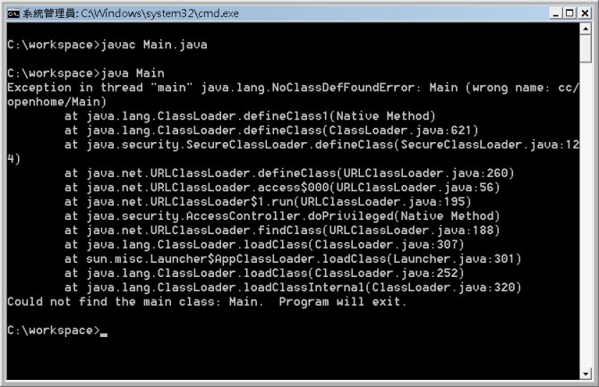
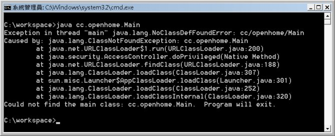
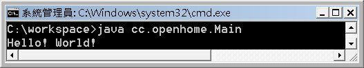

現在你所撰寫的類別，編譯出來的.class都放置在同一個資料夾下，這不是個很好的管理方式。就如同你會分不同的資料夾來放置不同作用的檔案，你的類別也應該分門別類加以放置。
如果你的應用程式是多個團隊共同合作，若不分門別類放置.class，那麼若A部門寫了個Util類別並編譯為Util.class，B部門寫了個Util類別並編譯為Util.class，當他們要將檔案整合時，就會發生檔案覆蓋的問題。
就算你使用A資料夾放置A部門的Util.class，B資料夾放置B部門的Util.class，避開了實體檔案覆蓋的問題，那麼在程式中，若要用到Util類別，那如何確定現在用到的是A資料夾中的Util，還是B資料夾中的Util？設Classpath不能解決問題，如果Classpath中順序是先找到A資料夾，程式中直接撰寫Util，所用到的都只會是A資料夾中的Util.class，如果Classpath中順序是先找到B資料夾，程式中直接撰寫Util，所用到的都只會是B資料夾中的Util.class（先找到先載入，記得嗎？）。
所以，你要有個分門別類管理類別的方式，無論是實體檔案上的分類管理，或是程式邏輯上的分類管理！
在Java中有個package關鍵字，可以讓你作類別的分類管理，例如若你想將Main放置cc分類下的openhome分類，則可以如下撰寫：
- Main.java
package cc.openhome;
public class Main {
public static void main(String[] args) {
System.out.println("Hello! World!");
}
}
如此，這個類別的名稱不再是Main，而是cc.openhome.Main，一般稱這為完全吻合名稱（Fully Qualified Name），這個名稱表示Main是放在cc分類下的openhome分類，也就是先前所謂程式邏輯上的分類管理。接下來你直接使用javac編譯並執行：

這個錯誤的訊息是指，你指定要執行Main類別，但當JVM載入編譯出來的Main.class時，發現它的名稱是cc.openhome. Main類別，而不是你指定的Main類別。java.lang.NoClassDefFoundError: Main表示找不到你指定的Main類別， wrong name: cc/openhome/Main表示載入的Main.class，完整名稱其實是cc.openhome.Main，JVM找入的Main.class是錯的。
但是如果你執行以下指令：

這次你指定的是完整的名稱cc.openhome.Main，JVM仍然報錯！java.lang.NoClassDefFoundError: cc/openhome/Main的意思，是說JVM在cc資料夾下openhome資料夾下找不到完整名稱為cc.openhome.Main的Main.class。
所以你要建立cc資料夾，而其中還有個openhome子資料夾，將Main.class放到其中：

然後執行一次：

一個完整名稱為cc.openhome.Main的類別，其編譯出來的Main.class，也必須放在實體的cc資料夾下openhome資料夾下，這就是先前所謂實體檔案上的分類管理。
當 然，每次都得這麼手動建立資料夾並置放.class實在太麻煩了，你可以在編譯時加上-d引數，這可以讓你指定編譯出來的.class檔案要放置的資料 夾，如果類別包括了package分類，則在你指定的資料夾下，就會建立起對應package階層的資料夾，並將.class放進去。例如：
javac -d c:\workspace Main.java
上面的指令執行過後，如果Main.java中package設定為cc.openhome，則c:\workspace下會建立cc資料夾與子資料夾openhome，並將Main.class放進去openhome資料夾。